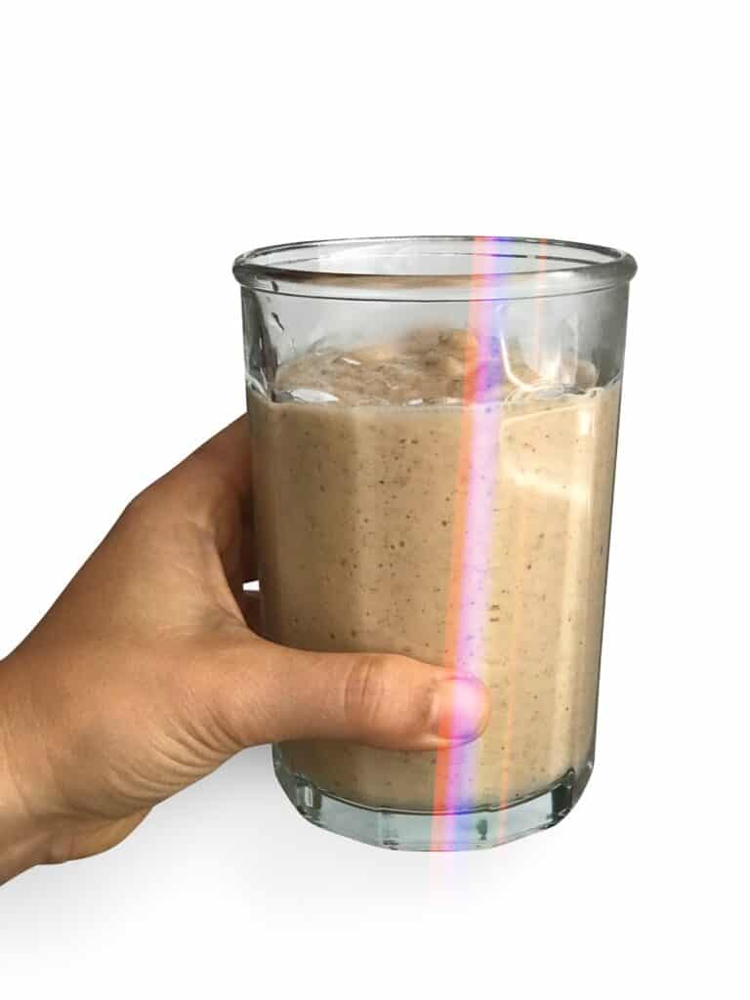

Liver and Kidney Detox

This detox flushes out your liver and kidneys
Drink in the morning for 10 days.
Ingredients
- 8 oz water
- 2 tbs of extra virgin olive oil
- 2 crushed garlic gloves
- pinch of cayenne pepper
Steps
- Crush 2 gralic gloves and add it to a blender
- Add 2 tbs of extra virgin olive oil and 8 oz water to the blender
- Add a pinch of cayenne pepper
- Blend and enjoy!